Lec 03 - SOC 搭建
本次培训将指导大家使用 Vivado 的 Block Design 功能搭建自己的 SOC，并在此基础上添加存储器与 GPIO 控制器，形成最小计算机系统。
将 RTL 代码封装为 IP 核
经过本周的实验，大家的 CPU 核已经改为向外暴露一个 AXI 接口，从而使得片上互联与外设扩展变得简单。我们使用 Vivado 提供的 Block Design（简称为 BD）功能便能搭建出一个基于 AXI 总线的 SOC，并能方便地进行外设扩展。而在 BD 中，搭建的单位由 Verilog 源码变为了 IP 核，因此需要将 SOC 中的主从设备先封装为 IP 核。
以封装 mycpu 为 IP 核为例，从 RTL 代码到 IP 核的过程为：
- 新建 Vivado 工程，其中仅包含 mycpu 的 RTL 源码，即顶层模块为
mycpu_top
注意
如果你的 CPU 核中调用了 Xilinx IP 核，那么需要将 IP 核一同加入到工程中。如果想要在新项目中加入一个已经在其他项目中定制的 IP 核，那么无需重新定制，只需要将描述 IP 核的 .xci 文件添加到项目中即可，添加方式与添加 RTL 源码相同。.xci 文件具体的位置为 <Project Home>/*.srcs/sources_1/ip/<IP Name>/*.xci。
- 将
mycpu_top.v中的debug_wb_*接口注释掉，这是为了后续定义 IP 接口时不产生混淆
封装前的配置
-
点击 Tools Create and Package New IP... 选项，开始封装一个 IP 核：
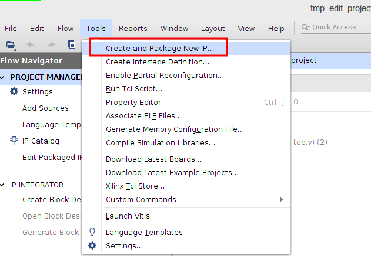
-
而后，将弹出一个设置界面，点击 Next：
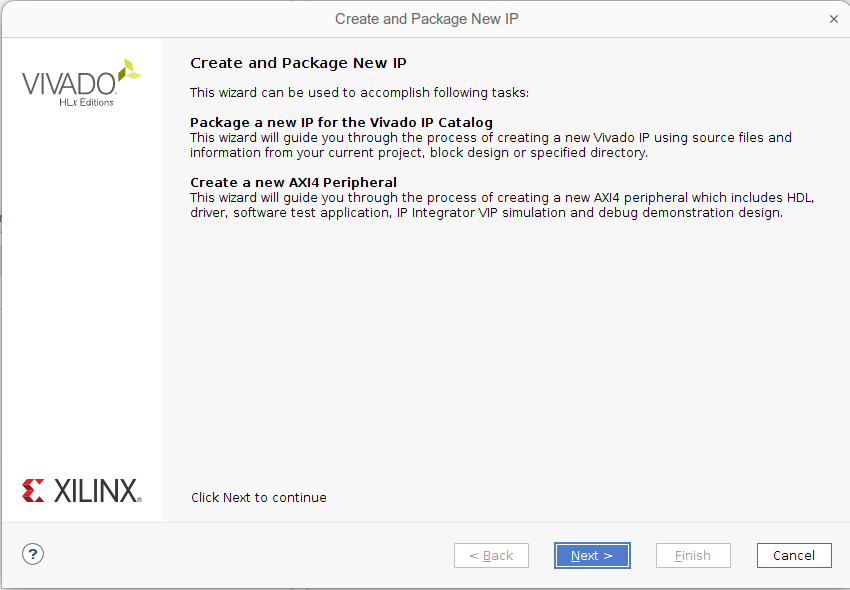
-
选择 Package your current project，设置封装目标为当前项目，然后点击 Next：
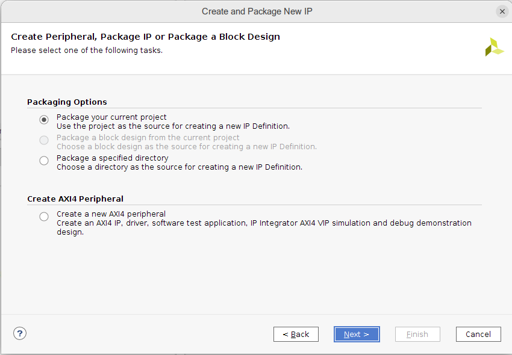
-
接下来在 IP location 输入框中输入自定义路径，该路径为 IP 文件的输出路径，然后点击 Next：
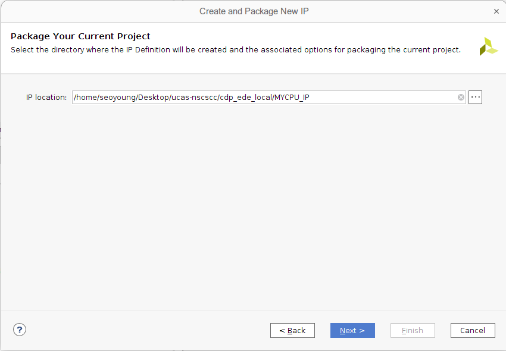
-
之后将弹出一个窗口询问是否拷贝源码，点击 OK：
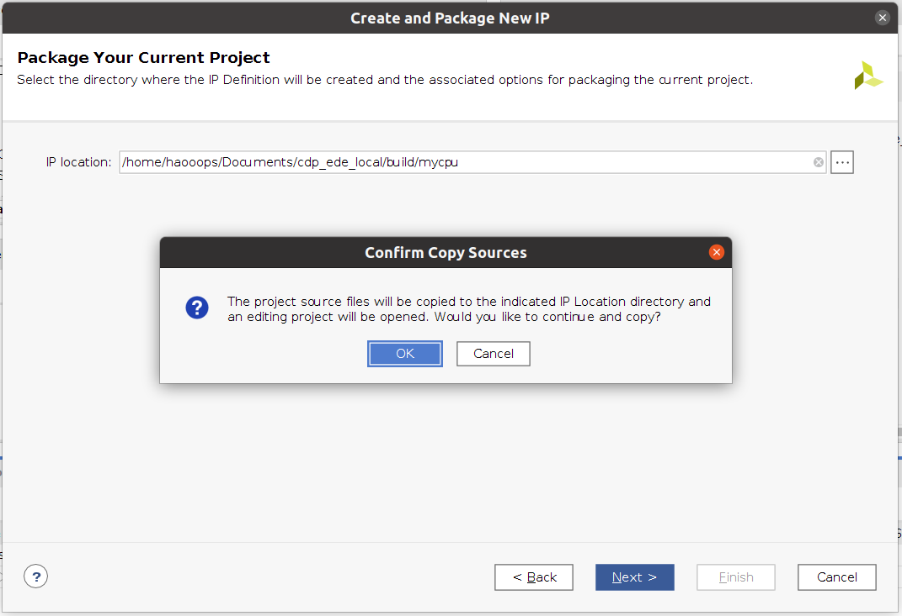
注意
如果 IP location 填写的路径下已经存在了之前封装过的 IP，则会弹出一个窗口询问是否覆盖，为了创建最新版本的 IP，点击 Overwrite： 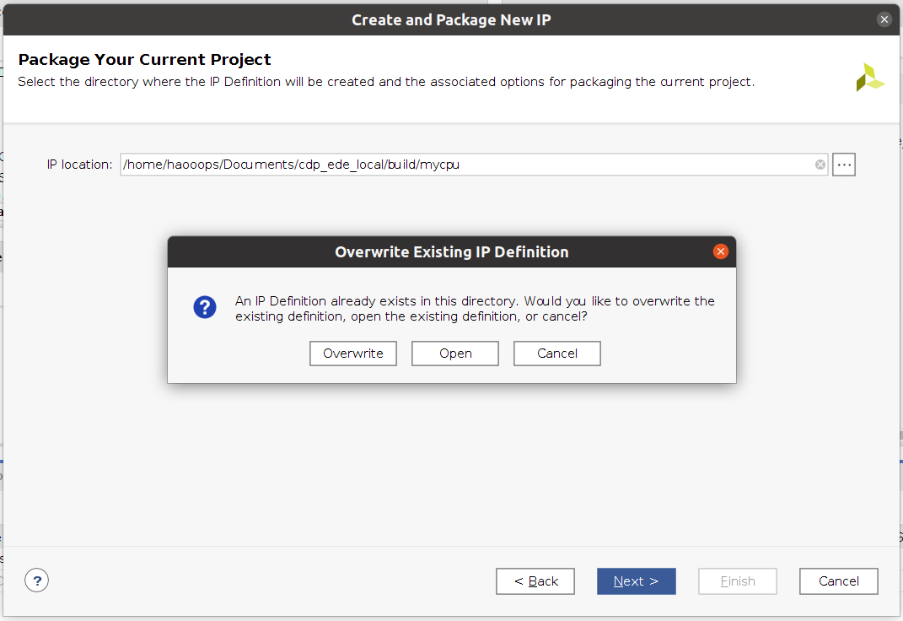
-
最后，点击 Finish，将会弹出一个新的临时工程用于配置 IP：
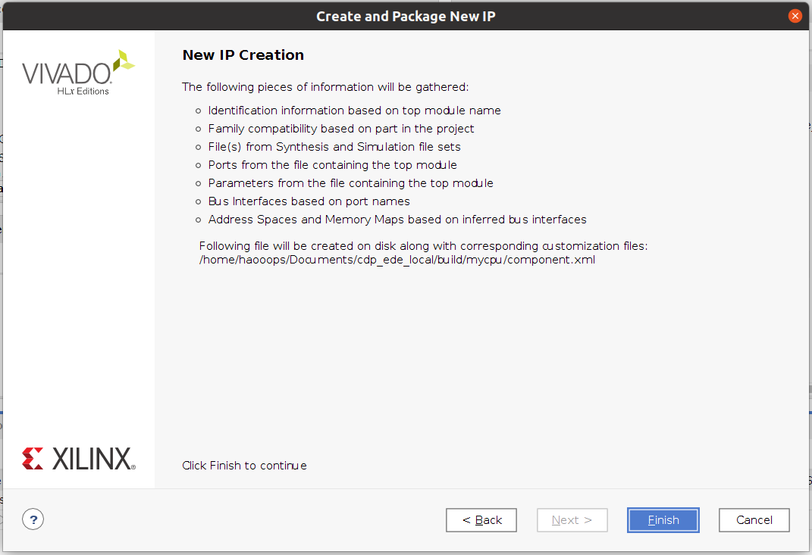
在临时工程中配置 IP
弹出的临时工程将自动打开 Package IP 的配置界面，按照下面的步骤对 mycpu IP 进行配置。
-
点击 Ports and Interfaces 右键 interface_aximm1 Edit Interface配置 mycpu 对外暴露的 AXI 接口：
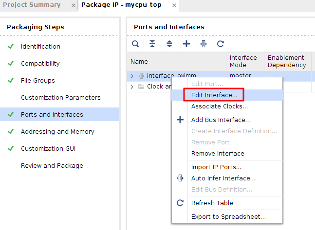
-
在弹出的窗口中，可以看到对该接口的配置信息，切换到 Port Mapping 选项卡，在最下面的窗口中检查 AXI 接口信号（左侧大写）与
mycpu_top中的信号（右侧小写）是否匹配2：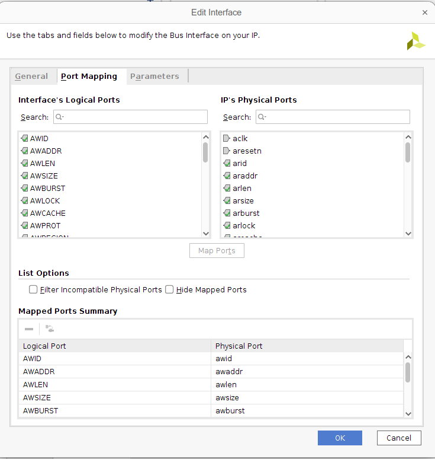
-
切换到 Parameters 选项卡，配置接口的参数。点击右侧的 按钮创建参数，在弹出的窗口中输入参数名为
FREQ_HZ，创建完成后，该参数位于 Optional 中，修改 value 一列对应的值为 mycpu 的实际运行频率，建议为 50MHz：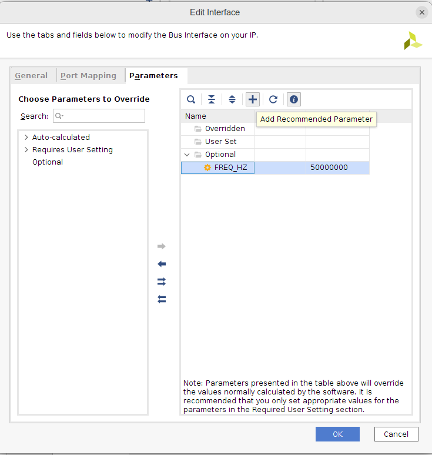
-
点击 OK 关闭 Edit Interface 窗口后，点击 Review and Package Package IP 按钮封装 IP：
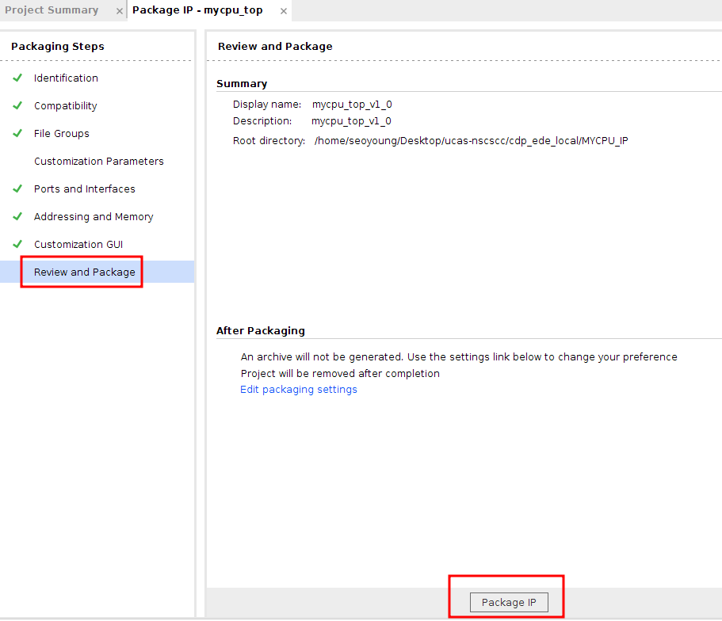
-
由于上一小节在 IP location 中填写的是该项目的位置，因此 IP 的
.xml描述文件位于该项目的根目录下：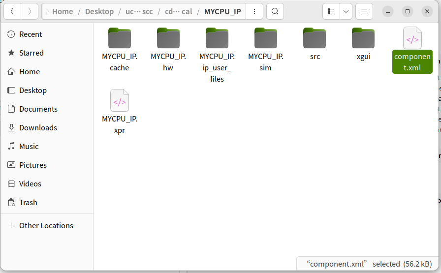
练习
为了在搭建好的 SOC 上使用 GPIO 功能，我们需要将 AXI 接口的 confreg 也封装为 IP。仿照封装 mycpu 的方法，新建一个工程，将 confreg 也封装为 IP 核。
使用 BD 功能搭建 SOC
我们可以直接使用创建 IP 核的项目搭建 SOC，也可以新创建一个项目。这里选择新建一个名为 mysoc 的项目。首先，以 tcl 终端模式启动 Vivado：
$ vivado -mode tcl
****** Vivado v2019.2 (64-bit)
**** SW Build 2708876 on Wed Nov 6 21:39:14 MST 2019
**** IP Build 2700528 on Thu Nov 7 00:09:20 MST 2019
** Copyright 1986-2019 Xilinx, Inc. All Rights Reserved.
Vivado%
导入 IP 仓库
启动完毕后，最底行显示的 Vivado% 相当于 shell 中的命令提示符，我们可以向终端输入命令来控制 Vivado 的行为。我们首先需要将创建的 IP 核导入新建的 Vivado 工程，使得在其中可以进行调用。
-
创建 Vivado 工程 mysoc，并使用 tree 工具查看生成的工程：
Vivado% create_project -force ./mysoc ./mysoc -part xc7a200tfbg676-1$ tree ./mysoc ./mysoc/ ├── mysoc.cache │ └── wt │ └── project.wpc ├── mysoc.hw │ └── mysoc.lpr ├── mysoc.ip_user_files └── mysoc.xpr 4 directories, 3 files -
创建完成后，Vivado 已经默认在当前 tcl 终端中打开了 mysoc 工程，将刚才创建的 IP 核导入当前工程3：
Vivado% set_property ip_repo_paths {<Mycpu Home> <Confreg Home>} [current_project]
搭建 SOC 框架
-
通过命令
start_gui启动图形界面：Vivado% start_gui -
启动图形界面后，点击 Flow Navigator IP INTEGRATOR Create Block Design 创建一个 Block Design：
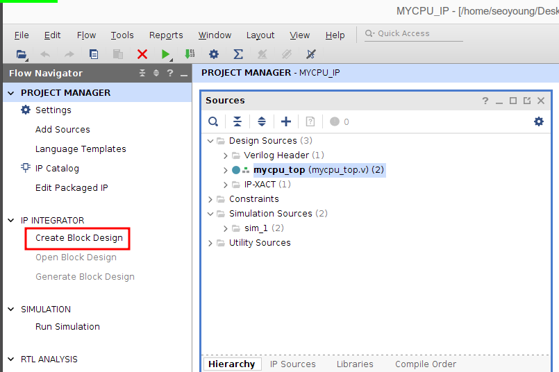
-
而后在打开的 Diagram 选项卡中点击 添加 IP 核，由于已经添加了 IP 仓库，因此可以看到自定义的 mycpu_top_v1_0 IP 核：
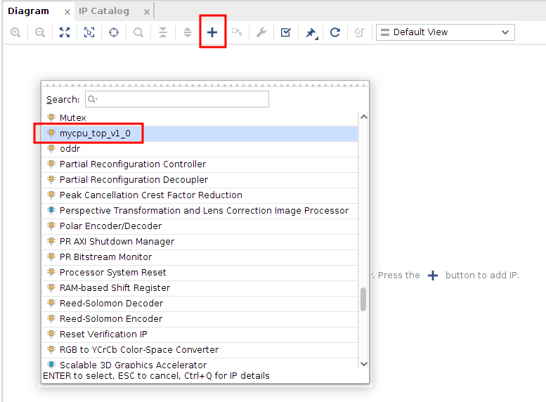
添加 mycpu
-
双击 mycpu_top_v1_0，相应的原理图将出现在 Diagram 中：
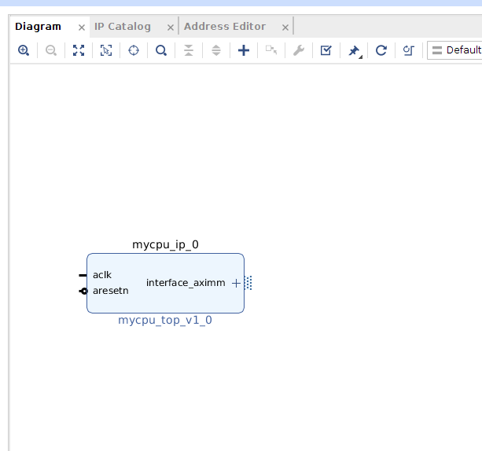
该原理图显示了 IP 核 mycpu_top_v1_0 中的所有接口，方框左侧为输入（从方）接口，右侧为输出（主方）接口。由于右侧为标准的主方 AXI 接口，因此所有的信号都包含在 interface_aximm 中，点击 可以查看其中包含的信号。
添加 AXI Crosscar
-
下一步，需要创建基于 AXI 总线的片上互联结构，添加一个 AXI Crossbar：
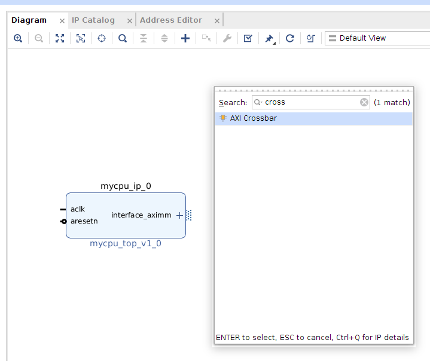
添加时钟与复位系统
-
添加 AXI Crossbar 后，可以使用鼠标连接 mycpu 的主方 AXI 接口与 Crossbar 上的从方 AXI 接口。同时，在上方将弹出一个绿色的提示框，提示可以自动连接线路，点击 Run Connection Automation：
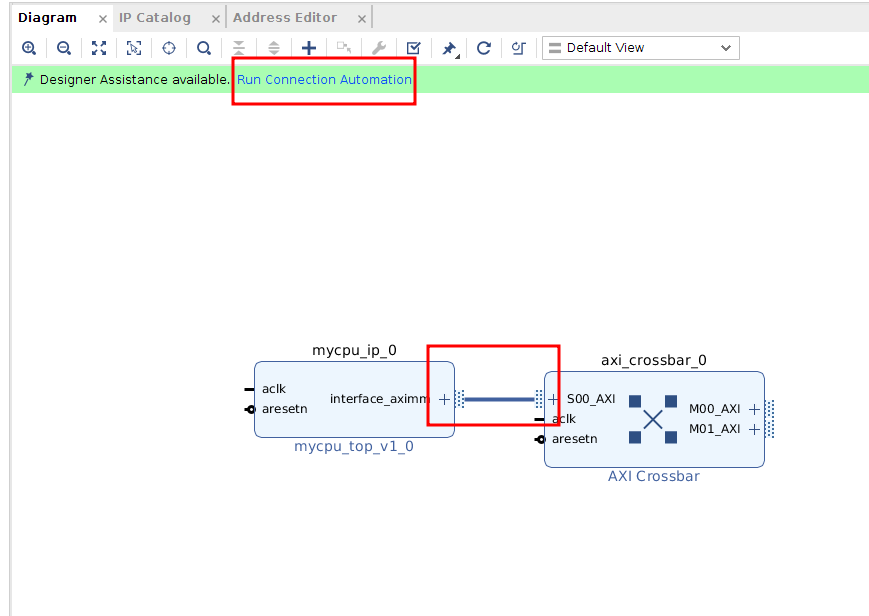
-
自动连线后，Vivado 将自动引入时钟 IP Clocking Wizard 与复位 IP Processor System Reset 并完成部分线路的连接：
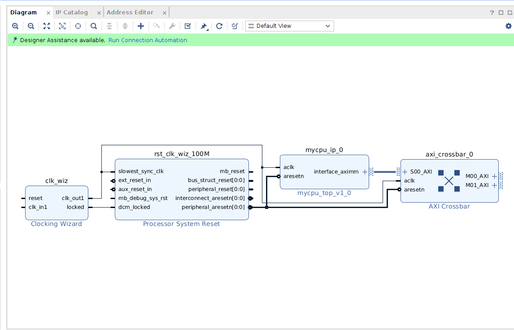
-
我们需要重新定制 IP clk_wiz，双击该模块，在弹出的配置窗口中切换到 Output Clocks，配置 cpu_clk 为 50MHz，timer_clk 为 100MHz：
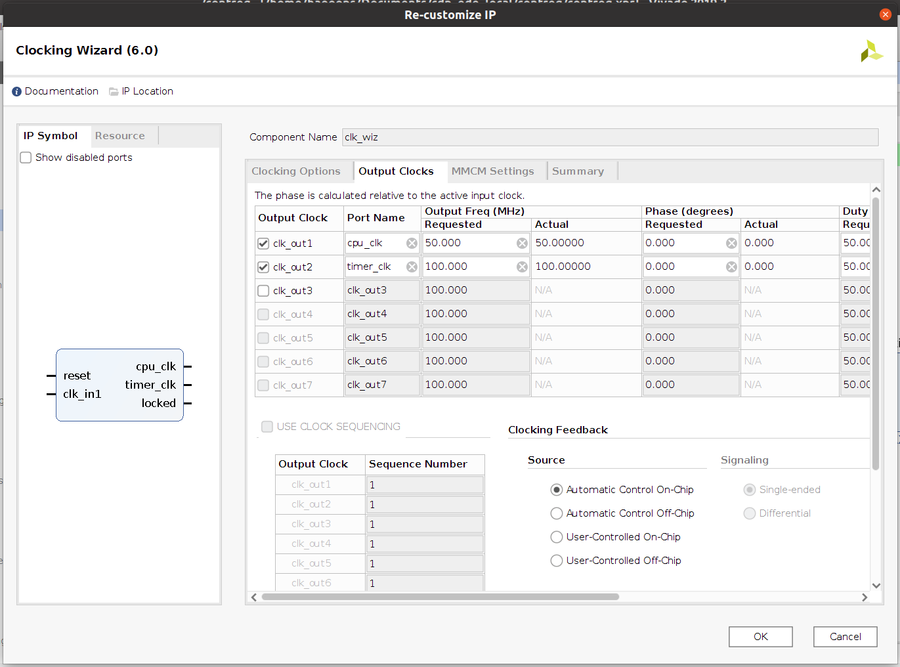
-
将该选项卡拖动到最底下，将 Reset Type 设置为 Active Low：
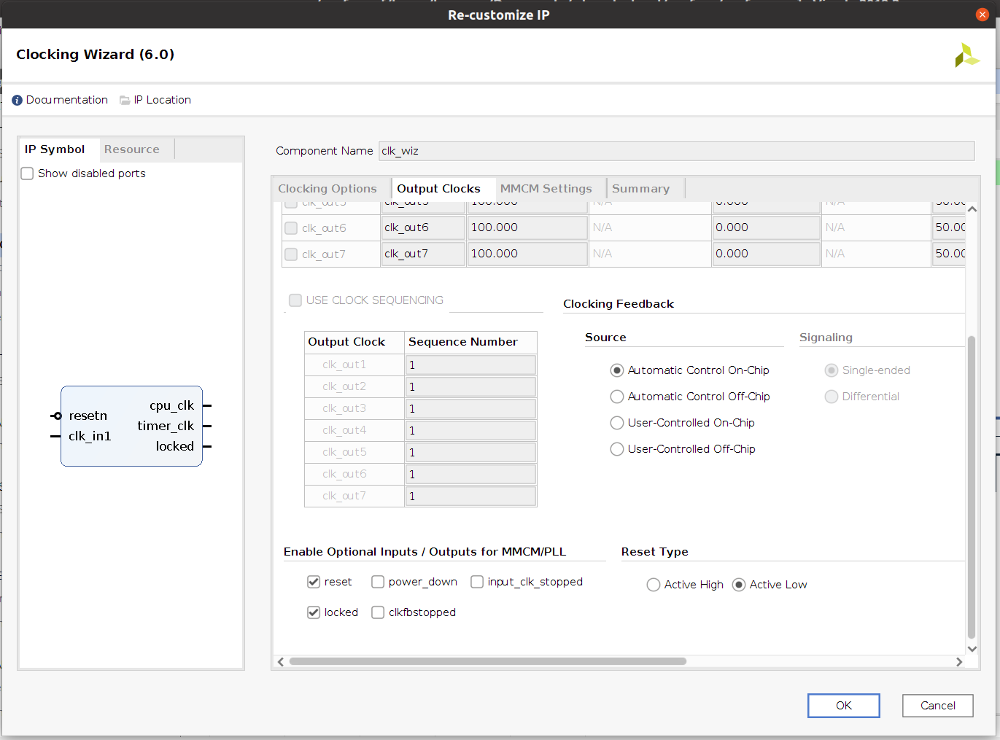
-
在点击 OK 保存设置后，Diagram 中连接 clk_wiz 的线路将自动断开，需要手动将 cpu_clk 接口连接到与 mycpu 中 aclk 接口相同的线路上：
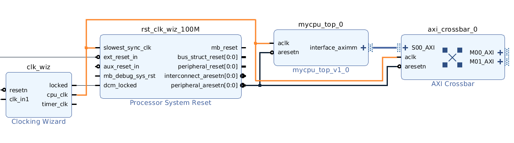
-
需要将 clk_wiz 上的 resetn 与 clk_in1 接口引出，最终约束到开发板的引脚上。将鼠标置于 clk_wiz 的 clk_in1 接口上，右键点击，在弹出的选项框中点击 Make External：
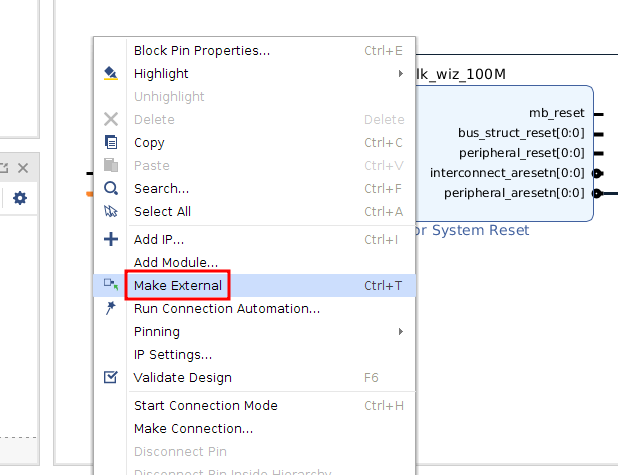
-
使用同样的方法将 resetn 设置为外部接口，然后将 rst_clk_wiz_100M 的 ext_reset_in 信号连接到与 resetn 相同的线路上：
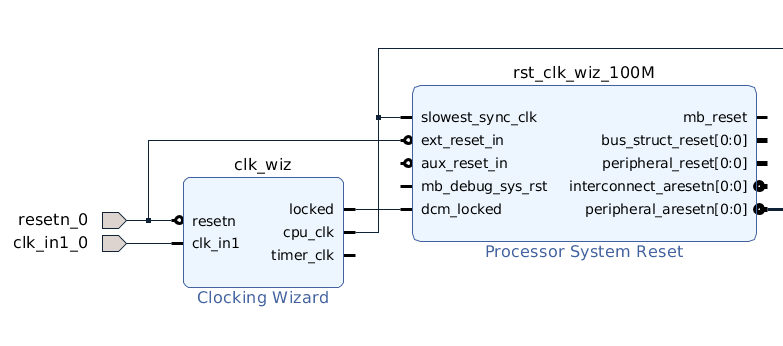
至此，一个基本的 SOC 框架就搭建完成了，我们可以根据需要在 SOC 中添加各种 AXI 设备。
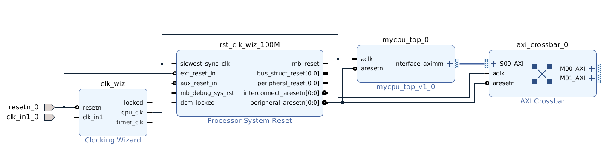
添加存储器与 IO 设备
Loongarch32r 的复位 PC 为 0x1c00_0000，因此必须将以该地址为基址的一片地址空间映射到一块存储器上。
添加 Boot ROM
-
添加 Block Memory Generator IP 核：
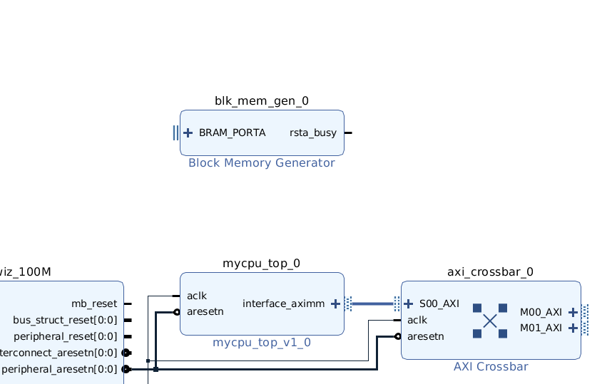
-
双击该 IP 核进行配置，需要将 Basic Mode 修改为 BRAM Controller，Basic Memory Type 修改为 Single Port ROM：
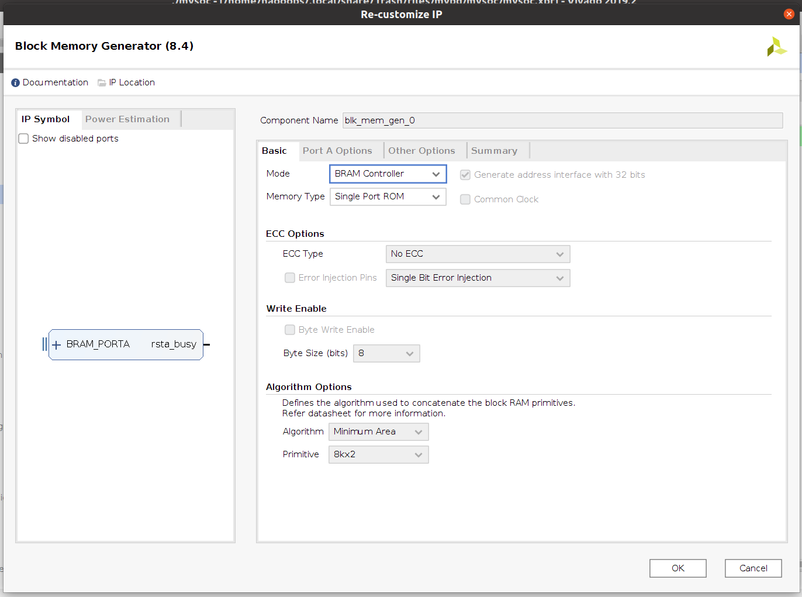
注意
-
此处我们选择了 Read Only Memory（ROM）作为 Boot ROM，这是因为在 BD 中只有 ROM 才能使用
.coe文件进行初始化。这样我们就无法将变量也保存在 ROM 中，因此稍后需要再添加一个 RAM，将它映射到其他地址段。通过 Boot ROM 的代码（即 bootloader）将真正要执行的程序加载到 RAM 中，再跳转到 RAM 中继续程序的执行。 -
此处我们无法设置存储器的深度，因为它的深度是随着稍后我们为它分配的地址空间大小自动变化的。
-
注意到该 IP 并不是 AXI 接口，而是 BRAM 接口，因此需添加一个 AXI BRAM Controller 进行转换：
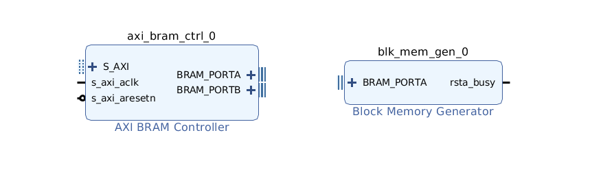
-
双击该 IP 核进行配置，将 BRAM Options Number of BRAM interfaces 修改为 1：
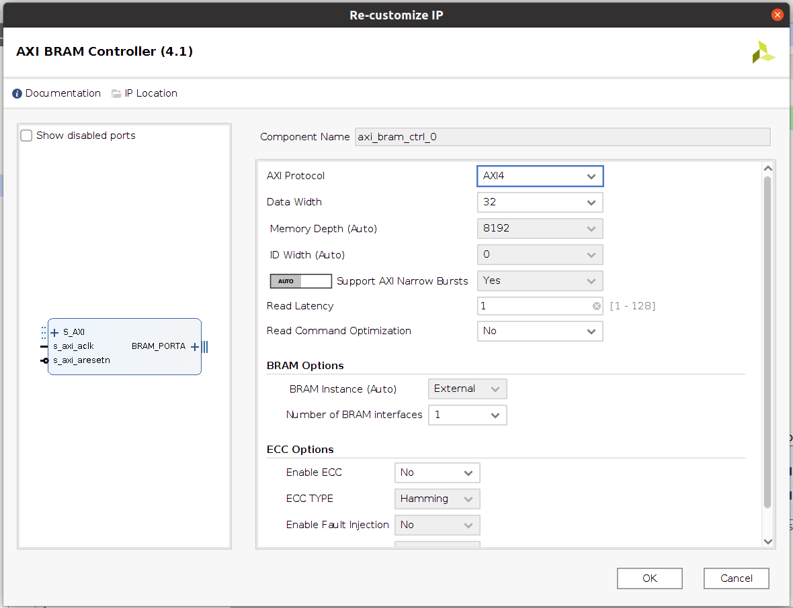
-
连接 axi_crossbar_0 的 M00_AXI axi_bram_ctrl_0 的 S_AXI，axi_bram_ctrl_0 的 BRAM_PORTA blk_mem_gen_0 的 BRAM_PORTA：
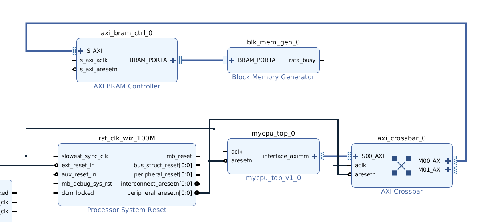
-
点击 Run Connection Automation 自动连接时钟与复位信号：
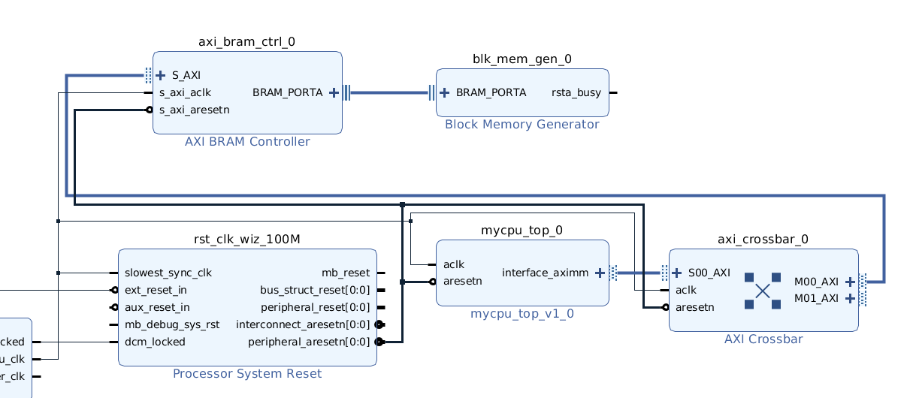
设置 Boot ROM 的映射地址
-
切换到 Address Editor 选项卡即可为 SOC 中的从设备分配地址。右键点击 Unmapped Slaves axi_bram_ctrl_0，选择 Assign Address 为 Boot ROM 配置地址：
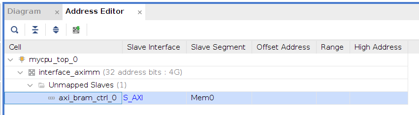
-
将 Offset Address 改为
0x1C00_0000，Range 修改为32K：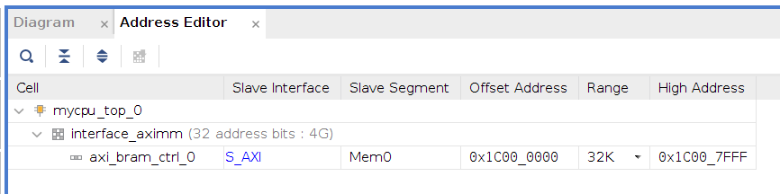
-
回到 Diagram，点击工具栏中的 Validate Design 按钮检查 SOC 中的连线是否正确，而后查看 axi_bram_ctrl_0 中 BRAM_PORTA 接口下 bram_addr_a 的宽度：
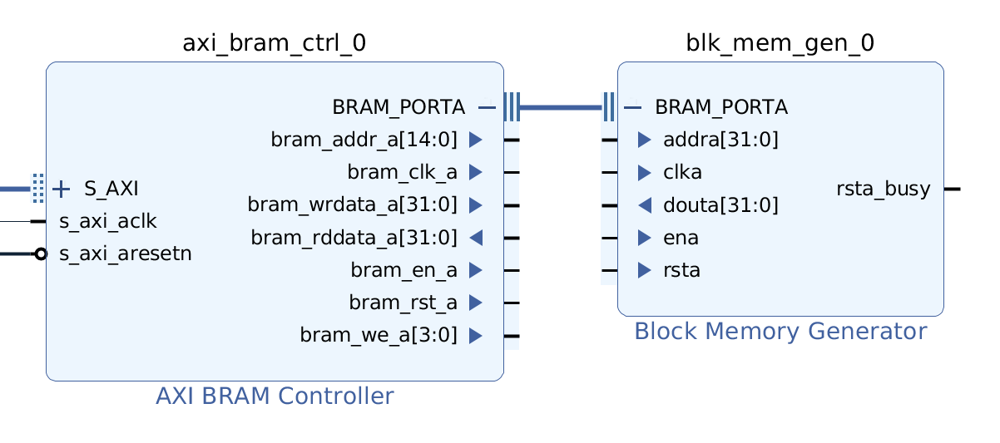
此时地址宽度已自动设置为与 32KB 相对应的 15 位。
练习
- 仿照添加 Boot ROM 的方法，添加一个 RAM 到 SOC 中，分配地址为：基址
0x1C00_8000，范围32K - 将 confreg IP 核添加到 SOC 中，分配地址为：基址
0xBFAF_0000，范围64K（提示：需要重新定制 axi_crossbar_0，增加 Master Interfece 的数量；同时添加完成后需要将一些接口设置为 External）